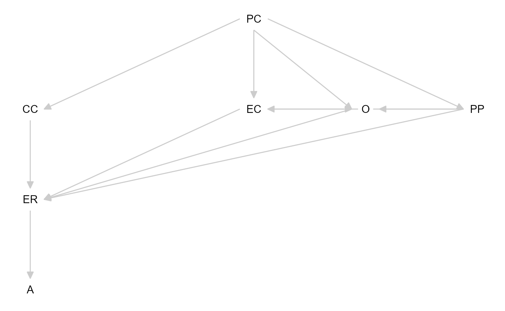
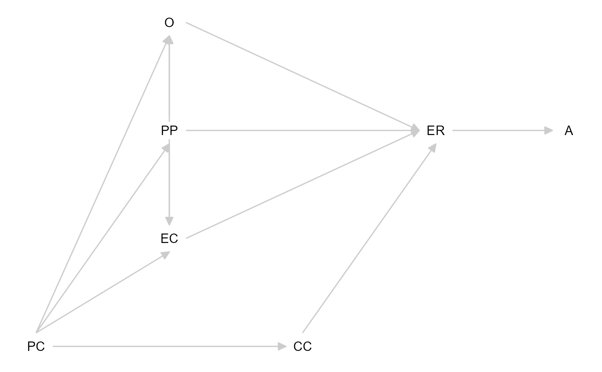

Introduction
Directed acyclic graphs (DAGs) are a powerful tool for expressing and
testing causal assumptions. They allow researchers to identify potential
confounders or colliders, and guide decisions about which variables to
control for (or not) in statistical analyses [@cinelliCrashCourseGood2022]. DAGs can be
implemented as FAIR theories, or can be derived from FAIR theories. In
this vignette, we’ll illustrate how to use DAGs for causal inference in
R, inspired by the Tripartite Model of the impact
of the family on children’s emotion regulation and adjustment [@morrisRoleFamilyContext2007].
Optional: Video Lecture
This video lecture gives an introduction to causal inference, with a focus on DAGs comprising three variables, including the distinction between confounders and colliders.
Install and Load Required Packages
We’ll use the following packages:
-
theorytoolsfor functions pertaining to FAIR theory and a sample dataset -
dagittyfor interacting with Directed Acyclic Graphs (DAGs) -
tidySEMfor visualizing DAGs
If you already have these packages installed, it is not necessary to run this code:
install.packages("theorytools")
install.packages("dagitty")
install.packages("tidySEM")
library(theorytools)
library(dagitty)
library(tidySEM)
#> Loading required package: OpenMx
#> Registered S3 method overwritten by 'tidySEM':
#> method from
#> predict.MxModel OpenMx
#>
#> Attaching package: 'tidySEM'
#> The following object is masked from 'package:dagitty':
#>
#> edges
library(ggplot2)The Tripartite Model
The tripartite model identifies three major familial influences on children’s ER:
- Observation (O), e.g., modeling parents’ behavior
- Parenting practices (PP), e.g., emotion coaching
- Emotional Family Climate (EC), e.g., attachment style
These three factors, together with parent characteristics (PC) and child characteristics (CC), shape the child’s emotion regulation (ER), which in turn influences the child’s adjustment (A) (e.g., internalizing/externalizing problems, social competence).
The model is visually represented below:

An interpretation of Morris’ Tripartite Model of Emotion Regulation Development
This figure, loosely based on the visual representation of the theory in the paper by Morris and colleagues, is relatively formalized compared to the standard for developmental psychological theories. Before we can FAIRify this theory, however, we have to clarify a few things, and make some decisions.
First, notice that the model does not explicitly follow any graphing convention. It resembles a structural equation model - but notice that there is an unconnected bold double-headed arrow near CC (Child Characteristics). The written description of the text clarifies the meaning of the bold arrow: the authors argue that Child Characteristics “moderate relations between family context [and] ER” (Morris et al., 2007, p. 364).
Second, note that most arrows are bidirectional. This would be fine if we wished to specify the model as a structural equation model where associations can be undirected. However, since our goal is to perform causal inference, we need a directed acyclic graph. This means we have to assume a direction of causality for all bidirectional arrows. Reading the text helps us direct some arrows: we read that “children learn about ER through [Observation]”, “parenting practices affect ER”, and “ER is affected by the emotional climate”. This is all causal language [@norouziCapturingCausalClaims2024]. Even though we later read that “ER and familial influences are bidirectional processes in our model”, and even though some recent publications have argued that child effects on parents outweigh parents’ effects on children in emotional development [@vanlissaMothersFathersQuantitative2020], for the purpose of this tutorial, we will assume only parent effects on children. It is fine to make strong assumptions when specifying theory; if they are inconsistent with the data, we can revise them later.
Third, note that it is not clear if there is a path from Parenting Practices to Adjustment. While there are paths from Observation and Emotional Climate to Adjustment, we read in the text: “although there are direct effects of the family context on children’s adjustment […] a mediational model is proposed”. Elsewhere in the text, “family context” is defined in terms of all three predictors (O, PP, and EC). We can thus either include all three direct effects, or omit them and assume full mediation. Since the latter option results in a much simpler DAG, we opt for full mediation.
Implementing the Tripartite Model as a DAG
We can implement the model as a DAG using the dagitty
package. We start with an “ontology”, or simply, by stating which
constructs exist in our DAG:
tripartite <- dagitty('dag {
O
PP
EC
PC
CC
ER
ANext, we add the directed edges that were present in the original theory:
PC -> CC
PC -> EC
PC -> PP
PC -> ONext, we direct the edges that run from Observation, Parenting Practices, and Emotional Climate to Emotion Regulation. We omit direct effects to Adjustment, and include an effect from ER to Adjustment.
O -> ER
PP -> ER
EC -> ER
ER -> ANext, we incorporate the effects of Child Characteristics. These are moderation effects. In a DAG, the interaction effect of two predictors on an outcome is simply represented by specifying both predictors as common causes of the outcome. When specifying a model, however, we may have to explicitly include interaction effects. We can annotate the graph in such a way that it is clear which variables are involved in interactions with O, PP, and EC, like this:
CC -> ER [form="CC:O+CC:PP+CC:EC"];Finally, we have to make a decision about the interrelations between the predictors of emotion regulation. We could omit them, or delve further into the literature to direct them. For now, I made the following assumptions:
- The Emotional Climate and specific Parenting Practices affect children’s Observation (=modeling) of parents’ behavior
- Parenting Practices affect the Emotional Climate
PP -> O
EC -> O
PP -> EC}')Now, we have a complete DAG!
Quiz
A DAG can have arrows that run left to right, arrows that run right to left, and bidirectional arrows.
An interaction effect of X1 and X2 on Y is represented in a DAG by drawing a directed arrow from X1 to Y, and from X2 to Y.
Information about functional form, like[form="CC:O+CC:PP+CC:EC"], is part of the DAG.
From DAG to FAIR Theory
A DAG is not yet a FAIR theory. We can FAIRify the DAG we specified above by following the steps outlined in the Making a Theory FAIR vignette. We briefly go over the steps here. First, let’s save the DAG to a text file:
writeLines(tripartite, "tripartite_model.txt")Your GitHub integration must be set up for the next step to work. You can check if everything is set up correctly by running:
worcs::check_git()
worcs::check_github()Next, we can create a FAIR theory repository:
create_fair_theory(
path = file.path("c:/theories", "tripartite_model"),
title = "Tripartite Model",
theory_file = "tripartite_model.txt",
remote_repo = "tripartite_model",
add_license = "cc0")Update the README.md file as necessary. Then, go to
Zenodo, and switch
on archiving for this GitHub repository. Once this is done, run:
worcs::git_release_publish(repo = file.path("c:/theories", "tripartite_model"))Finally, you can edit the metadata for the archived version on Zenodo.
The following DOI shows my version of the FAIR Tripartite Model: https://doi.org/10.5281/zenodo.14921521
Accessing an Existing FAIR Theory
There are several ways in which we can access an existing FAIR theory. If our goal is simply to use it in our analysis workflow (as is the case in this tutorial), then we can access the static archived version on Zenodo by running:
download_zenodo(
doi = "https://doi.org/10.5281/zenodo.14921521",
path = "c:/theories/tripartite_downloaded")If we want to contribute to further theory development, we might instead prefer to fork the original GitHub repository to our own GitHub account, and create a local clone of our newly forked repository. In R, you can clone a repository like so:
gert::git_clone(
url = "https://github.com/cjvanlissa/tripartite_model.git",
path = "c:/theories/tripartite_clone")The difference between these two approaches is that the former only copies the statically archived files to your device, whereas the latter copies the entire Git repository with its history of commits and all branches, and continues to version control changes you make.
For this tutorial, please download my version of the Tripartite Model
using download_zenodo().
X-Interoperability in R
Interoperability pertains to the ability to use a theory in scientific workflows. X-interoperability refers to the ability to use a theory for specific operations in scientific workflows. When we go through the remainder of the turorial, we are demonstrating that our FAIR tripartite model is X-interoperable for visualization in R, for selecting control variables, for performing causal inference, et cetera. That is to say: we can directly ingest the FAIR theory in R, and interact with it in our analysis environment and use it to construct fully reproducible analysis workflows, including for causal inference.
First, let’s ingest the theory into our R environment:
tripartite <- dagitty(paste(readLines("c:/theories/tripartite_downloaded/tripartite_model.txt"), collapse = "\n"))Then, we can plot the model using the tidySEM
package:
graph_sem(tripartite)
We can optionally specify a layout for the graph, so that it resembles the model as visualized by Morris and colleagues:
lo <- get_layout(
"", "O", "", "", "",
"", "PP", "", "ER", "A",
"", "EC", "", "", "",
"PC", "", "CC", "", "",
rows = 4
)
graph_sem(tripartite, layout = lo)
The tidySEM vignette on plotting
structural equation models further explains how to customize this
figure, which is a ggplot object.
Quiz
Which of the following describes the property of X-interoperability of a FAIR theory?
If you are contributing to theory development, which platform provides infrastructure to coordinate collaborate with known others and strangers?Simulating Data from the FAIR Theory
Simulation studies allow us to explore the implications of model assumptions, to plan our analyses before data collection, to conduct power analysis and plan our sample size, and to preregister a fully reproducible analysis pipeline [Preregistration-As-Code, @peikertReproducibleResearchTutorial2021; @vanlissaComplementingPreregisteredConfirmatory2022].
Below is a simplistic code snippet to generate synthetic data using
the dagitty::simulateSEM() function. This function
interprets the DAG as a structural equation model, samples random values
for the path coefficients (unless specific values are provided), and
assumes normal residual variances. Note that many other functions for
simulating data exist, and some may be better suited to particular use
cases.
set.seed(1)
df_sim <- simulateSEM(tripartite, N = 497)
head(df_sim)
#> A CC EC ER O PC
#> 1 0.04103747 -0.6521996 0.441980426 1.3464706 -1.1814515 0.83889824
#> 2 1.88702074 -0.1975775 -0.256197190 1.0674489 0.3406396 -0.02163595
#> 3 0.40705740 -1.3591083 0.319985214 1.1334489 1.8517664 -1.06364141
#> 4 -0.51613591 0.7973387 -0.337020725 -1.1480291 -1.5748778 0.37919677
#> 5 1.22537069 -1.5630894 -1.946047994 0.5514646 -0.6099942 0.01637417
#> 6 -1.23368280 -0.9879830 0.009866581 0.8895392 0.8006259 -1.26121894
#> PP
#> 1 0.1457759
#> 2 -0.6250181
#> 3 -0.4471091
#> 4 0.4668580
#> 5 0.1474225
#> 6 -1.1976349This synthetic dataset is consistent with the structure encoded in our Tripartite Model, though the parameter values are arbitrary. In real research, you might use prior studies or expert knowledge to set more realistic parameter values. For this tutorial, we select some ad-hoc values, and assign zero (0), small (.2), or medium (.4) effect sizes to the paths in our DAG:
tripartite_coef <- dagitty('dag {
O
PP
EC
PC
CC
ER
A
PC -> CC [beta=.4]
PC -> EC [beta=.2]
PC -> PP [beta=.2]
PC -> O [beta=0]
O -> ER [beta=.2]
PP -> ER [beta=0]
EC -> ER [beta=.2]
ER -> A [beta=.4]
CC -> ER [beta=.4];
PP -> O [beta=0]
EC -> O [beta=0]
PP -> EC [beta=.2]
}')
set.seed(51)
df_sim <- simulateSEM(tripartite_coef, N = 497)Selecting Control Variables
One advantage of a DAG is the ability to identify which
variables should be controlled for (e.g., to avoid confounding)
and which variables should not be controlled for (e.g.,
colliders). In dagitty, you can use the function
adjustmentSets() to find minimal sufficient adjustment sets
for estimating specific causal effects.
For instance, let’s say we want to examine the causal effect of Observation on Emotion Regulation. We can run:
adjustmentSets(tripartite, exposure="O", outcome="ER")
#> { CC, EC, PP }
#> { EC, PC, PP }The DAG-based algorithm identifies which sets of variables are sufficient to block backdoor paths, given some strong assumptions [@pearlCausalDiagramsEmpirical1995]. The result suggests that it is enough to control for Child Characteristics, Emotional Climate, and Parenting Practices if we wish to obtain an unbiased estimate of the effect of Observation on Emotion Regulation. Alternatively, we can control for Parent Characteristics, Emotional Climate, and Parenting Practices.
Quiz
When estimating the effect of Observation on Emotion Regulation, It is fine to control for both Child Characteristics and Parent Characteristics.
What is the smallest possible simple adjustment set for the effect of Child Characteristics on Adjustment?Basic Causal Inference
Once we know which variables to control for, we can use standard
regression to estimate the causal effect. Using regression assumes that
all causal effects are linear and additive, with normally distributed
residuals and predictors without measurement error. Other methods exist
which do not make these assumptions. We can use the function
select_controls() to construct a data.frame
with our exposure, outcome, and the relevant control variables. This
facilitates conducting causal inference with the appropriate control
variables, as you can just use the model formula
outcome ~ exposure to obtain the uncontrolled effect, and
outcome ~ . to obtain the causal estimate.
df_controls <- select_controls(tripartite, df_sim, exposure = "O", outcome = "ER")
model_bivariate <- lm(ER ~ O, df_controls)
model_causal <- lm(ER ~., df_controls)
summary(model_bivariate)
#>
#> Call:
#> lm(formula = ER ~ O, data = df_controls)
#>
#> Residuals:
#> Min 1Q Median 3Q Max
#> -2.8773 -0.6705 -0.0366 0.7262 3.2154
#>
#> Coefficients:
#> Estimate Std. Error t value Pr(>|t|)
#> (Intercept) -0.02616 0.04608 -0.568 0.571
#> O 0.06788 0.04652 1.459 0.145
#>
#> Residual standard error: 1.023 on 495 degrees of freedom
#> Multiple R-squared: 0.004283, Adjusted R-squared: 0.002271
#> F-statistic: 2.129 on 1 and 495 DF, p-value: 0.1452
summary(model_causal)
#>
#> Call:
#> lm(formula = ER ~ ., data = df_controls)
#>
#> Residuals:
#> Min 1Q Median 3Q Max
#> -2.5732 -0.5483 0.0839 0.6073 3.4954
#>
#> Coefficients:
#> Estimate Std. Error t value Pr(>|t|)
#> (Intercept) -0.03514 0.04053 -0.867 0.38633
#> O 0.13537 0.04140 3.270 0.00115 **
#> CC 0.46224 0.04085 11.315 < 2e-16 ***
#> EC 0.19545 0.03996 4.891 1.36e-06 ***
#> PP -0.04527 0.04082 -1.109 0.26793
#> ---
#> Signif. codes: 0 '***' 0.001 '**' 0.01 '*' 0.05 '.' 0.1 ' ' 1
#>
#> Residual standard error: 0.8965 on 492 degrees of freedom
#> Multiple R-squared: 0.2397, Adjusted R-squared: 0.2335
#> F-statistic: 38.78 on 4 and 492 DF, p-value: < 2.2e-16Quiz
What is the causal effect of Observation on Emotion Regulation?
There is a significant causal effect of Observation on Emotion Regulation.
If the DAG is correct, thenmodel_bivariate gives us an
unbiased estimate of the effect of Observation on Emotion Regulation.
Using Real Data
When working with real data, causal inference quickly becomes more
complicated. Therefore, we provide a “real data” example here, to
practice the relevant skills. The theorytools package
includes a dataset that is based on “Growing Up in
Australia - the Longitudinal Study of Australian Children” (LSAC).
As the LSAC dataset is accessible by explicit permission only, this is a
synthetic dataset with similar properties to the real data. Let’s access
the data:
head(lsac)
#> warmth relationship_quality temperament_negreact emotion_regulation
#> 1 3.500000 2.285714 1.75 2.4
#> 2 5.000000 3.285714 1.75 1.0
#> 3 5.000000 3.857143 2.00 2.0
#> 4 3.333333 3.285714 1.75 1.0
#> 5 4.333333 2.857143 2.25 1.8
#> 6 2.833333 NaN 5.00 1.4
#> social_functioning coping
#> 1 3.0 2
#> 2 1.6 3
#> 3 1.8 5
#> 4 1.2 3
#> 5 1.2 4
#> 6 2.6 1Mapping Measured Variables onto Theoretical Constructs
Here, we are using real data to operationalize the theoretical constructs in our DAG. If we inspect the documentation of the data, we can conclude that the most likely mapping of constructs to variables is:
operationalizations <- c(PP = "warmth", EC = "relationship_quality", CC = "temperament_negreact", ER = "emotion_regulation", A = "social_functioning", PC = "coping")Let’s rename the variables, so the data and the DAG are consistent. We will also perform a rudimentary imputation, as missing data can cause problems later on. Note that there is abundant literature on best practices in handling missing data; here, we use single imputation for pragmatic reasons.
# Impute missing data
df_real <- VIM::kNN(lsac, numFun = median)
names(df_real) <- names(operationalizations)[match(operationalizations, names(df_real))]Note that one variable is missing: Observation (O). This is unfortunate, as for the previous example we used O as our exposure variable. For the remainder of the examples, we will use Parenting Practices as our exposure variable. Obtain the adjusment set for the effect of Parenting Practices on Emotion Regulation:
adjustmentSets(tripartite, exposure = "EC", outcome = "ER")
#> { PC, PP }Any DAG implies conditional independencies: variables that should be statistically independent from one another, after controlling for a specific adjustment set. As a kind of assumption check, we could test if the variables in our dataset indeed show these statistical independencies. If our data show dependencies where the DAG implies independence, this can be taken as evidence against the veracity of our DAG. Of course, there are alternative explanations: how we operationalized the construct, the presence of measurement error, sampling bias, et cetera.
The function localTests applies the d-separation
criterion to determine all conditional independencies implied by a DAG,
and then performs tests for each of them. Different types of tests are
available for different types of variables. For continuous variables
(which we have), the "cis.loess" method provides
non-parametric conditional independence tests using bootstrapped loess
regression.
Let’s first conduct conditional independence tests for the dataset that we simulated from the DAG. Because we’re conducting a lot of significance tests, we can control the overall probability of making a Type I error (i.e., drawing false positive conclusions about discrepancies between DAG and data). We can use Bonferroni-corrected bootstrapped confidence intervals for testing, as demonstrated in the following code block:
# Get all DAG-implied conditional independencies
cis <- impliedConditionalIndependencies(tripartite)
# Bonferroni-corrected confidence interval
bonferroni <- 1-(.05/length(cis))
# Conduct the tests
ci_tests <- localTests(tripartite, df_sim, type = "cis.loess", R = 1000, tests = cis, conf.level = bonferroni)
# Print result, with added significance asterisks
add_significance(ci_tests)
#> estimate std.error 0.25% 99.75%
#> A _||_ CC | ER -0.02488395 0.04541527 -0.14715226 0.108502878
#> A _||_ EC | ER -0.08206144 0.04910397 -0.20560400 0.055630567
#> A _||_ O | ER 0.01604344 0.04103371 -0.09277371 0.135921735
#> A _||_ PC | CC, EC, O, PP -0.06710313 0.04162413 -0.18500210 0.033920284
#> A _||_ PC | ER -0.06037961 0.04378464 -0.17342936 0.056272447
#> A _||_ PP | ER -0.01504872 0.04463377 -0.13707558 0.109638952
#> CC _||_ EC | PC -0.06701484 0.04548868 -0.18696604 0.058277531
#> CC _||_ O | PC -0.04608873 0.04135799 -0.15492342 0.067892851
#> CC _||_ PP | PC 0.03402876 0.04614528 -0.09232252 0.161732327
#> ER _||_ PC | CC, EC, O, PP -0.11134996 0.04751354 -0.23923411 0.009837374
#> significant
#> A _||_ CC | ER
#> A _||_ EC | ER
#> A _||_ O | ER
#> A _||_ PC | CC, EC, O, PP
#> A _||_ PC | ER
#> A _||_ PP | ER
#> CC _||_ EC | PC
#> CC _||_ O | PC
#> CC _||_ PP | PC
#> ER _||_ PC | CC, EC, O, PPNow, let’s perform the same tests for the real data. Because we have a missing variable, we cannot test the complete set. We can filter all conditional independencies that cannot be tested. Don’t forget to use a different Bonferroni correction for the resulting (smaller number of) tests!
cis_real <- filter_conditional_independencies(cis, df_real)
bonferroni <- 1-(.05/length(cis_real))
# Conduct the tests
ci_tests <- localTests(tripartite, df_real, type = "cis.loess", R = 1000, tests = cis_real, conf.level = bonferroni)
# Print result, with added significance asterisks
add_significance(ci_tests)
#> estimate std.error 0.416666666666665% 99.5833333333333%
#> A _||_ CC | ER 0.33415818 0.01156398 0.3050274 0.36573861
#> A _||_ EC | ER -0.07461219 0.01175213 -0.1048497 -0.04367367
#> A _||_ PC | ER -0.18556313 0.01142589 -0.2152855 -0.15789145
#> A _||_ PP | ER -0.11868779 0.01128070 -0.1465077 -0.09036928
#> CC _||_ EC | PC -0.07078118 0.01182194 -0.1023458 -0.03836728
#> CC _||_ PP | PC -0.19258437 0.01229991 -0.2222188 -0.15670884
#> significant
#> A _||_ CC | ER *
#> A _||_ EC | ER *
#> A _||_ PC | ER *
#> A _||_ PP | ER *
#> CC _||_ EC | PC *
#> CC _||_ PP | PC *Quiz
We can use Parenting Practices because O is not in its adjustment set.
Which of these causal effects can we estimate using these data?
The ci_tests give us reasons to doubt that
df_sim is consistent with the DAG.
The ci_tests give us reasons to doubt that
df_real is consistent with the DAG.
df_real. Could this be related
to your answers in the previous two questions?